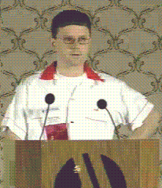

Rob Pike, Bell Labs.

(Introducing keynote speaker Penn Jillette, of the magic and comedy duo Penn & Teller,
at the Summer 1994 USENIX
conference in Boston, MA.)
From the Biography section of a paper on his Acme user environment,
presented at the Winter 1994 USENIX Conference in San Francisco:
Rob Pike, well known for his appearances on ``Late Night with David Letterman'',
is also a Member of Technical Staff at AT&T Bell Laboratories in
Murray Hill, New Jersey, where he has been since 1980, the same year
he won the Olympic silver medal in
Archery. In 1981 he wrote
the first bitmap window system for Unix systems, and has since written
ten more. With Bart
Locanthi he designed the Blit terminal;
with Brian Kernighan he wrote
The Unix Programming Environment.
A shuttle mission nearly launched a gammaray telescope he
designed. He is a Canadian citizen and has never written
a program that uses cursor addressing.
If that doesn't impress you, try his cheesecake
(metric version).
References to Rob Pike in the C programming subtree:
- Why Pascal is Not My Favorite Programming Language
- I am grateful to Al Aho, Al Feuer, Narain Gehani, Bob Martin,
Doug McIlroy, Rob Pike,
Dennis Ritchie, Chris Van Wyk and Charles Wetherell for
helpful criticisms of earlier versions of this paper.
- Tom Duff on Duff's Device
- To: ucbvax!decvax!hcr!rrg, ucbvax!ihnp4!hcr!rrg, ucbvax!research!dmr,
ucbvax!research!rob
- Notes on Programming in C
- Rob Pike
- How to Use the Plan 9 C Compiler
- Rob Pike
 Lysator
Lysator  ANSI
History
Culture
Literature
ANSI
History
Culture
Literature
 Authors' Rights
Authors' Rights